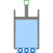

SweptVolumevarying cylindric volume depending on the position of the piston |

|
Diagram
{kind=link}
Information
This information is part of the Modelica Standard Library maintained by the Modelica Association.
Mixing volume with varying size. The size of the volume is given by:
- cross sectional piston area
- piston stroke given by the flange position s
- clearance (volume at flange position = 0)
Losses are neglected. The shaft power is completely converted into mechanical work on the fluid.
The flange position has to be equal or greater than zero. Otherwise the simulation stops. The force of the flange results from the pressure difference between medium and ambient pressure and the cross sectional piston area. For using the component, a top level instance of the ambient model with the inner attribute is needed.
The pressure at both fluid ports equals the medium pressure in the volume. No suction nor discharge valve is included in the model.
The thermal port is directly connected to the medium. The temperature of the thermal port equals the medium temperature. The heat capacity of the cylinder and the piston are not includes in the model.
Parameters (19)
| energyDynamics |
Value: system.energyDynamics Type: Dynamics Description: Formulation of energy balance |
|---|---|
| massDynamics |
Value: system.massDynamics Type: Dynamics Description: Formulation of mass balance |
| substanceDynamics |
Value: massDynamics Type: Dynamics Description: Formulation of substance balance |
| traceDynamics |
Value: massDynamics Type: Dynamics Description: Formulation of trace substance balance |
| p_start |
Value: system.p_start Type: AbsolutePressure (Pa) Description: Start value of pressure |
| use_T_start |
Value: true Type: Boolean Description: = true, use T_start, otherwise h_start |
| T_start |
Value: if use_T_start then system.T_start else Medium.temperature_phX(p_start, h_start, X_start) Type: Temperature (K) Description: Start value of temperature |
| h_start |
Value: if use_T_start then Medium.specificEnthalpy_pTX(p_start, T_start, X_start) else Medium.h_default Type: SpecificEnthalpy (J/kg) Description: Start value of specific enthalpy |
| X_start |
Value: Medium.X_default Type: MassFraction[Medium.nX] (kg/kg) Description: Start value of mass fractions m_i/m |
| C_start |
Value: Medium.C_default Type: ExtraProperty[Medium.nC] Description: Start value of trace substances |
| nPorts |
Value: 0 Type: Integer Description: Number of ports |
| use_portsData |
Value: true Type: Boolean Description: = false to neglect pressure loss and kinetic energy |
| portsData |
Value: Type: VesselPortsData[if use_portsData then nPorts else 0] Description: Data of inlet/outlet ports |
| m_flow_nominal |
Value: if system.use_eps_Re then system.m_flow_nominal else 1e2 * system.m_flow_small Type: MassFlowRate (kg/s) Description: Nominal value for mass flow rates in ports |
| m_flow_small |
Value: if system.use_eps_Re then system.eps_m_flow * m_flow_nominal else system.m_flow_small Type: MassFlowRate (kg/s) Description: Regularization range at zero mass flow rate |
| use_Re |
Value: system.use_eps_Re Type: Boolean Description: = true, if turbulent region is defined by Re, otherwise by m_flow_small |
| use_HeatTransfer |
Value: false Type: Boolean Description: = true to use the HeatTransfer model |
| pistonCrossArea |
Value: Type: Area (m²) Description: Cross sectional area of piston |
| clearance |
Value: Type: Volume (m³) Description: Remaining volume at zero piston stroke |
Inputs (2)
Connectors (3)
| ports |
Type: VesselFluidPorts_b[nPorts] Description: Fluid inlets and outlets |
|
|---|---|---|
| heatPort |
Type: HeatPort_a |
|
| flange |
Type: Flange_b Description: translation flange for piston |
Components (4)
| system |
Type: System Description: System properties |
|
|---|---|---|
| medium |
Type: BaseProperties |
|
| portsData |
Type: VesselPortsData[if use_portsData then nPorts else 0] Description: Data of inlet/outlet ports |
|
| heatTransfer |
Type: HeatTransfer |